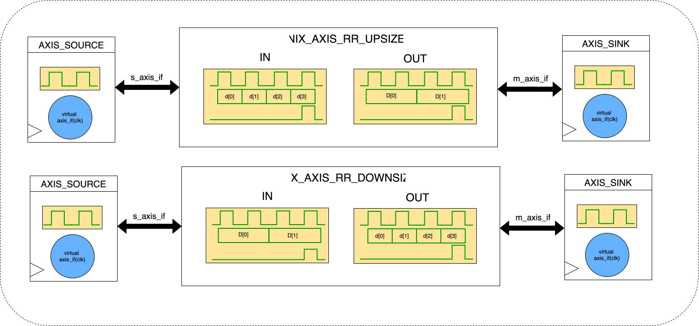

Real datapaths rarely use a single stream width end to end. A DMA path may prefer wide words for memory efficiency, while the producer emits bytes or halfwords. A video stage may process one or two pixels at a time, then write results through a wider stream. A CNN accelerator may consume vectors chosen for the MAC array width, while feature maps arrive in a different packing. Ethernet and packet pipelines face the same problem: parser, buffer, and MAC stages do not always want the same bus width. Width converters are the glue that makes these stages connect cleanly without forcing every block to adopt the same datapath.
In verilaxi, AXI-Stream width conversion is implemented in three related forms:
- integer upsizing, where several narrow beats are packed into one wider beat
- integer downsizing, where one wide beat is emitted as several narrower beats
- rational byte repacking, where the input and output widths are byte-aligned but not integer multiples of each other
The first two are conceptually simple pack and unpack operations. The third is more interesting, because once the ratio is rational the converter must preserve a rolling byte stream rather than simply regrouping whole beats.
Figure (1) shows the rational-ratio wrappers used in verilaxi. The top path upsizes from a narrower input to a wider output, while the bottom path downsizes from a wider input to a narrower output. The same byte-preserving repacking idea sits behind the more general rational converter.
{kind=link}

Figure (1): Rational-ratio AXI-Stream width-converter wrappers in verilaxi. The top path is snix_axis_rr_upsizer (narrow to wide) and the bottom path is snix_axis_rr_downsizer (wide to narrow).
Why width conversion matters
Width conversion appears whenever one stage is optimized for memory bandwidth and another is optimized for compute granularity. That is common in high-throughput systems.
- DMA: a memory-facing path often wants
64-bitor128-bittransfers, while the source or sink may naturally produce8-bitor16-bitsamples. - Video processing: a pixel block may work on one component or one pixel per cycle, then feed a wider writer or crossbar.
- CNN accelerators: feature maps and weights may be streamed in one width while compute tiles consume packed vectors in another.
- Ethernet and packet paths: packet buffering, parsing, and framing logic often operate at different convenient widths.
A useful design library therefore needs more than sources, sinks, FIFOs, and arbiters. It also needs the blocks that let mismatched widths connect without losing byte order, TKEEP validity, or packet boundaries.
Which converter to choose
The module choice depends on the ratio between the input and output widths.
- Use
snix_axis_upsizerwhenOUT = N × INfor an integer narrow-to-wide conversion. - Use
snix_axis_downsizerwhenIN = N × OUTfor an integer wide-to-narrow conversion. - Use
snix_axis_rr_upsizerwhen the ratio is rational andOUT > IN. - Use
snix_axis_rr_downsizerwhen the ratio is rational andIN > OUT. - Use
snix_axis_rr_converterwhen the direction is not fixed or when a generic byte-aligned rational converter is more convenient.
The numerical examples below illustrate all three cases: integer upsizing, integer downsizing, and rational byte repacking.
Three kinds of converter
The easiest case is integer upsizing. If the input is 8-bit and the output is 32-bit, the converter simply collects four input bytes and emits one output beat. Integer downsizing is the reverse: a 32-bit input beat is accepted once, then drained as four 8-bit output beats.
Rational conversion is different. A 16-bit to 24-bit converter cannot reset neatly after every beat, because two input beats produce four bytes, which correspond to one full 24-bit output beat plus one leftover byte. That leftover byte must be carried into the next cycle and combined with future input data. The mirrored downsize case, 24-bit to 16-bit, has the same alignment window but drains it in the opposite direction. This turns the problem into byte-stream repacking rather than simple beat regrouping.
Upsizing example: 8 -> 32
Assume the input produces one valid byte per beat and the converter emits a 32-bit output word. The converter accumulates four bytes before asserting the output handshake, unless the packet ends early.
| Input beat | Valid byte | Buffer after beat | Output |
|---|---|---|---|
| 0 | B0 | [B0] | none |
| 1 | B1 | [B0 B1] | none |
| 2 | B2 | [B0 B1 B2] | none |
| 3 | B3 | [B0 B1 B2 B3] | [B3 B2 B1 B0], TKEEP=1111 |
Table (1): Integer upsizing from 8-bit to 32-bit
If the packet ends after only three bytes, the converter still emits one final 32-bit beat, but now TKEEP marks only the valid lanes. In that case the packed output contains three bytes and TKEEP=0111 for the final beat. The exact bit ordering depends on the chosen byte-lane convention, but the important point is that the converter emits a partial last word without losing packet termination.
Downsizing example: 32 -> 8
Downsizing accepts one wide beat, stores it internally, and then drains it one smaller slice at a time. The input handshake happens once, but the output handshake happens once per emitted slice.
| Output beat | Source bytes remaining | Emitted byte | TLAST |
|---|---|---|---|
| 0 | [B0 B1 B2 B3] | B0 | 0 |
| 1 | [B1 B2 B3] | B1 | 0 |
| 2 | [B2 B3] | B2 | 0 |
| 3 | [B3] | B3 | 1 if final byte of packet |
Table (2): Integer downsizing from 32-bit to 8-bit
This is exactly the kind of conversion that appears when a DMA read path returns wide memory words but the downstream logic consumes a byte stream or a narrow sample stream.
Rational example: 16 -> 24
The rational case is where width conversion becomes more interesting. A 16-bit input beat contributes two bytes, while a 24-bit output beat consumes three bytes. The converter therefore needs a byte reservoir that persists across handshakes.
| Step | Action | Reservoir contents | Output |
|---|---|---|---|
| 1 | accept [B1 B0] | [B0 B1] | none |
| 2 | accept [B3 B2] | [B0 B1 B2 B3] | [B2 B1 B0], TKEEP=111 |
| 3 | after emit | [B3] | none |
| 4 | accept [B5 B4] | [B3 B4 B5] | [B5 B4 B3], TKEEP=111 |
Table (3): Rational conversion from 16-bit to 24-bit
The important point is that the byte stream remains ordered even though the beat boundaries do not line up. This is why rational conversion is better described as byte repacking than as simple upsizing or downsizing.
Example beat traces
It is often easier to understand width conversion by looking at accepted input beats and emitted output beats side by side. The verilaxi tests now log both directions explicitly, which makes the grouping and draining behavior much easier to follow.
For an 8 -> 32 upsizer, a short packet trace looks like:
[UPS][IN ] beat 0/3 tdata=0x01 tkeep=1 tlast=0
[UPS][IN ] beat 1/3 tdata=0x02 tkeep=1 tlast=0
[UPS][IN ] beat 2/3 tdata=0x03 tkeep=1 tlast=0
[UPS][IN ] beat 3/3 tdata=0x04 tkeep=1 tlast=1
[UPS][OUT] beat 0 tdata=0x04030201 tkeep=1111 tlast=1
For a 32 -> 8 downsizer, the pattern is reversed: one input beat is followed by several output beats:
[DNS][IN ] beat 0/0 tdata=0x04030201 tkeep=1111 tlast=1
[DNS][OUT] beat 0 tdata=0x01 tkeep=1 tlast=0
[DNS][OUT] beat 1 tdata=0x02 tkeep=1 tlast=0
[DNS][OUT] beat 2 tdata=0x03 tkeep=1 tlast=0
[DNS][OUT] beat 3 tdata=0x04 tkeep=1 tlast=1
For the rational 16 -> 24 case, the key observation is that the output beats no longer line up one-for-one with the input beats:
[RRC][IN ] beat 0/2 tdata=0x0201 tkeep=11 tlast=0
[RRC][IN ] beat 1/2 tdata=0x0403 tkeep=11 tlast=0
[RRC][OUT] beat 0 tdata=0x030201 tkeep=111 tlast=0
[RRC][IN ] beat 2/2 tdata=0x0605 tkeep=11 tlast=1
[RRC][OUT] beat 1 tdata=0x060504 tkeep=111 tlast=1These traces make the main difference between the three converter families visible immediately: integer upsizers collect, integer downsizers drain, and rational converters carry partial byte progress across beat boundaries.
Implementation details
The integer converters are straightforward. The upsizer keeps a phase counter and a small bank of partial words, then emits once the output word is full or the packet ends. The downsizer accepts one input word into a holding register, then drains it slice by slice until the last valid output beat has been emitted.
The rational converter is where the implementation gets more interesting. A useful way to reason about it is through the greatest common divisor and least common multiple of the two widths. If the input width is IN and the output width is OUT, then one natural conversion window is:
LCM(IN, OUT)
Within that window, a fixed number of input beats maps to a fixed number of output beats. For example, with 16 -> 24:
GCD(16, 24) = 8LCM(16, 24) = 4848 / 16 = 3input beats per conversion window48 / 24 = 2output beats per conversion window
This LCM view is useful because it tells us the repeating structure of the conversion. Three 16-bit beats carry the same total number of bits as two 24-bit beats. In a naive implementation, that suggests buffering one full LCM-sized window and then draining it.
That idea is correct, but a practical AXI-Stream converter must also cope with partial packets and sparse TKEEP. Once arbitrary byte validity is allowed, the implementation has to preserve a byte stream rather than simply reshuffling fixed bit fields. That is why the verilaxi rational converter is structured as a byte reservoir: valid input bytes are appended in order, and output bytes are drained in order once enough bytes exist for an output beat or the packet ends.
Another important detail is when this arithmetic is done. The converter does not divide widths at runtime in hardware. Instead, the GCD, LCM, and the repeating input/output ratios are resolved at elaboration time, when the parameterized module instance is turned into a concrete design. For a specific instance such as IN=16, OUT=24, the tool can determine once and for all that the repeating relationship is 3 input beats to 2 output beats.
That distinction matters because elaboration-time arithmetic becomes constants in the generated RTL, while runtime arithmetic becomes real hardware. If the converter tried to compute divide or modulo relationships dynamically in the datapath, synthesis would produce much larger and slower logic than needed. By deriving the ratio structure up front, the generated hardware can stay small and regular: counters, byte counts, comparators, and muxes instead of generic divider logic.
The LCM rule and why it matters
The LCM rule is not just a mathematical curiosity. It tells us the smallest width window where the two interfaces align exactly. That helps in two ways:
- it defines the repeating ratio between input and output beats
- it gives a natural upper bound for the amount of buffering needed by a grouped conversion scheme
For the mirrored rational downsize case, consider 24 -> 16:
GCD(24, 16) = 8LCM(24, 16) = 4848 / 24 = 2input beats48 / 16 = 3output beats
So one full 48-bit conversion window can be viewed in two mirrored ways:
16 -> 24: three input beats become two output beats24 -> 16: two input beats become three output beats
The reservoir implementation does not need to think in rigid windows at runtime, but this arithmetic still explains the shape of the datapath and why the converter naturally needs storage larger than either interface width alone.
This also explains why integer conversion is simpler. If one width is an exact multiple of the other, the LCM collapses to the wider width, so the converter only needs a straightforward pack or unpack schedule. Rational conversion is harder precisely because the alignment window is larger than both interface widths, which forces the design to carry partial progress across beats.
Synthesis-aware implementation choices
One lesson from building these converters in SystemVerilog is that mathematically simple expressions are not always synthesis-friendly if they are left for hardware to compute dynamically. A direct divider or modulo operation in the active datapath can blow up logic area quickly, especially in generic parameterized modules.
For that reason, the converter family in verilaxi leans on elaboration-time arithmetic and simple counters wherever possible:
- integer converters compute their ratio as a localparam and use phase counters instead of dynamic arithmetic
- the rational converter derives
GCDand the effective conversion ratios at elaboration time TKEEPand packet-end behaviour are driven by byte counts and compact masks rather than synthesized divide/modulo datapaths in the hot path
This is partly a performance choice and partly a portability choice. Keeping the arithmetic simple helps both timing closure and tool behavior across Verilator and Yosys.
There is also a structural optimization here. The integer converters can often overlap input acceptance and output consumption because their control is just a small counter and a holding register. Rational conversion is inherently more stateful, since byte alignment does not reset every beat. Even so, implementing it as a byte reservoir keeps the core logic regular: append valid bytes, track how many are buffered, emit when enough bytes exist, and generate TKEEP from the actual valid-byte count.
The practical takeaway is that the mathematical view and the hardware view are both useful, but for different reasons. The GCD/LCM arithmetic explains the repeating relationship between widths. The actual RTL should then turn that relationship into constant parameters, small counters, and simple control decisions. That is the point of the elaboration-time approach: use the math to shape the circuit, not to burden the circuit with unnecessary arithmetic hardware.
TKEEP turns this into a byte problem
AXI-Stream width conversion becomes much more subtle once TKEEP is allowed to be sparse. If every beat is full except for the final packet beat, an integer converter can often be understood as a simple counter plus a shifter. Once TKEEP can mark arbitrary subsets of valid bytes, the converter must compact and preserve only the valid bytes.
That means the converter is no longer just moving words between widths. It is transforming a byte stream with explicit validity information. In other words, width conversion stops being just a beat regrouping problem and becomes a byte-stream repacking problem.
This matters in practice. A DMA path may end on a partial memory word. A packet path may strip or append headers and emit short fragments. A video or CNN block may generate trailing partial groups when frame sizes are not aligned to the preferred vector width. If the converter gets TKEEP wrong, the packet length can still look correct while the payload is corrupted byte by byte.
How the RTL is structured
The integer upsizer and downsizer in verilaxi use parameterized integer ratios and are straightforward to reason about. The rational converter uses a byte reservoir. Valid input bytes are appended in order, and output bytes are drained in order once enough data is available for an output beat or once the packet ends.
This structure is a good fit for arbitrary byte-aligned ratios because it avoids forcing the logic into special-case pack/unpack rules for each width pair. Instead, the converter operates on a common internal idea: accepted valid bytes go into the reservoir, emitted bytes come out of it, and TKEEP follows the number of valid bytes available on each output beat.
How the tests prove it
A width converter can appear correct if you only count beats and packets. That is not enough. The core verification problem is byte ordering and byte validity.
The converter tests in verilaxi therefore use byte-accurate scoreboards. Instead of checking only packet counts or final TLAST, the testbench builds an expected byte queue, consumes emitted bytes one beat at a time, and checks:
TDATAlane contentsTKEEPmask valuesTLASTposition- final byte and packet counts
This is especially important for the rational converter, where a design can easily preserve the right number of bytes while still mis-ordering lanes or marking stale bytes as valid.
Where these blocks fit
Width converters are not glamorous IP blocks, but they are essential datapath glue. They show up wherever systems try to combine bandwidth efficiency, compute efficiency, and protocol cleanliness in the same design.
- A streaming DMA may upsizer sensor or packet data into wider memory-facing words.
- A DMA read path may downsizer memory words into narrower processing streams.
- A video chain may move between per-pixel and multi-pixel packing.
- A CNN accelerator may bridge scalar feature-map streams and vectorized compute lanes.
- An Ethernet path may connect packet buffers, parsers, and MAC-adjacent logic that naturally prefer different widths.
Once a library has these blocks alongside FIFOs, arbiters, DMA engines, and assertions, it becomes much more useful as a system-building toolkit rather than just a collection of isolated IPs.
Closing remarks
AXI-Stream width converters are easy to underestimate. The integer cases are simple enough that they can look like a minor utility block, and the rational case looks at first like only a more general version of the same thing. In practice they sit directly on the path between real producers and consumers, and small mistakes in byte ordering or validity handling turn into silent payload corruption.
That is why the most important ideas in these converters are not only the data-path structures themselves, but also the insistence on byte-accurate verification. Once the tests prove that bytes, TKEEP, and packet boundaries survive width changes correctly, these blocks become dependable building blocks for DMA, video, CNN, and packet-processing systems.
Related posts
- AXI DMA - Moving Data Without the CPU
- AXI-Stream Arbitration in SystemVerilog
- Synchronous and Asynchronous FIFOs
Also available in GitHub.